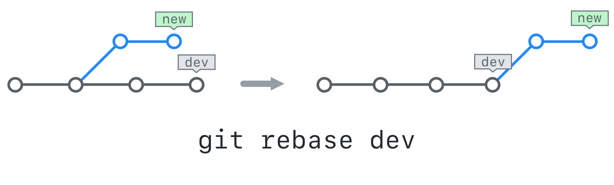

Hacktoberfest
About us
The Society for Open Software (SOS) is a newly formed society with the purpose of increasing awareness of free and open source software and boost student engagement with the open source community.

Link to these slides
https://bits-sos.github.io/slides/hacktoberfest
Resources
What is Open Source software?
Open Source software is software that’s freely available to use, redistribute, and modify, typically shared via a public code repository hosting service.
Why Open Source software?
- Control
- Safety
- Privacy
My Experience
- Contributing to Open Source Software looks very daunting, but it is not very hard
- Contributing to Open Source Software is extremely rewarding
Hacktoberfest
Participation
- Register anytime between September 26 and October 31
- PRs can be made to any project that’s participating in Hacktoberfest
- PRs must be accepted to count towards your total
Rewards
- The first 50,000 participants to have their first PR/MR accepted will have a tree planted in their name through Tree Nation
- Participants with four pull/merge requests accepted between October 1 and October 31 will receive a unique digital reward
List of Projects
Sites for finding projects to contribute to
Communication is Key!
Always talk before you start writing code!
Don't go for a perfect first commit!
Instead, aim for a doable first commit!
Check how active the repository is
See how long the maintainers take to respond to issues, how many open PRs are there among other things
Workflow
- Fork the repository and make a local clone
- Create a branch for your work
- Navigate to the web ui, select the branch
- Compare & Pull Request
Git
Git is a version control system created by Linus Torvalds and is the industry-standard VCS used by most projects.
Git and Github are not the same thing!
A common misconception among beginners is that Github and Git are the same thing. Git repositories do not need to be hosted on Github. In fact, git repositories do not need to be hosted anywhere!
Getting started with Git
Open your terminal if you wish to follow along!
Setup
git config --global user.name "your-username"
git config --global user.email "your-email"
git config --global core.editor "your-text-editor"
Cloning a Repository
git clone https://github.com/BITS-SOS/linux-basics
git remote -v
Another way to Clone
git init
git branch -m main
git remote add origin https://github.com/BITS-SOS/linux-basics
git pull origin main
Staging
git status
git add hello.c
git reset hello.c
git add -A
Committing
NOTE: -am does NOT add newly created files
git commit -m "Commit Message"
git commit -am "Commit Message"
Branches
git branch
git branch new-branch
git checkout new-branch
git checkout -b newer-branch
Merging Branches
git merge merging-branch
git branch -d merging-branch
Merge Conflicts
git merge branch
git status
code conflicting_file
git add conflicting_file
git commit
Fetching
git fetch origin
git merge origin/main
git pull
Stashing
git stash
git stash show stash@{0}
git stash pop stash@{0}
git stash apply stash@{0}
git stash drop stash@{0}
git stash clear
.gitignore
code .gitignore
Rebasing

Rebasing
git rebase -i HEAD~1
git rebase -i hash
git rebase -i origin/main
Reverting
git revert hash
git reset --hard HEAD~1
Committing your code
Following good etiquette makes it easier for your commits and PRs to be merged!
Writing a good Commit Message
Suggested format: Conventional Commtis
fix: fixes foo to do xyz
This fixes things broken by a bug in foo, and does xyz.
BREAKING CHANGE:
Before this bar was set to 0, now it is set to 1.
Closes Github Issue #123
Writing a good Pull Request
https://github.blog/2015-01-21-how-to-write-the-perfect-pull-request/
Join our community!